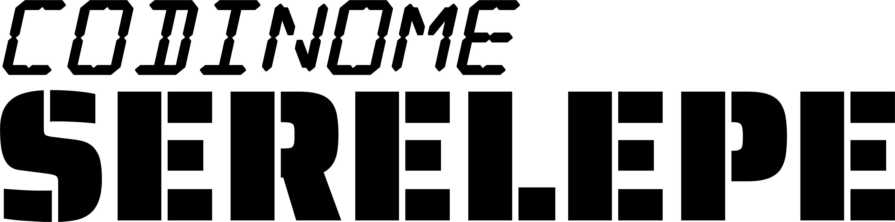

01
GDD — BRIEFING OPERACIONAL
VISÃO GERAL
[EXPANDIR / RECOLHER]
SÍNTESE: Extração cirúrgica de sobreviventes atrás das linhas inimigas.
VISÃO GERAL
[EXPANDIR / RECOLHER]Serelepe coloca o jogador no manche de um helicóptero militar atrás das linhas inimigas. A prioridade não é aniquilar oponentes, mas realizar extrações cirúrgicas: demolir prisões, recolher sobreviventes e trazê-los vivos à base, equilibrando a agressividade ofensiva com a fragilidade da aeronave e dos próprios civis.
02
GDD — PILARES CENTRAIS
4 SUBSISTEMAS
PILARES DE GAMEPLAY
[EXPANDIR / RECOLHER]
ESTRUTURA: Manche Pesado, Carga Viva (8–10 passageiros), Fogo Frenético e Regiões de Operação.
PILARES DE GAMEPLAY
[EXPANDIR / RECOLHER]MANCHE PESADO
Massa, arrasto e inércia real sem parada brusca. Pilotar exige alternar três posturas (avanço rápido, esquiva frontal e ré tática) e executar pousos suaves para não danificar a fuselagem.
CARGA VIVA
O resgate é a missão. Reféns correm em pânico até a aeronave, vulneráveis a balas perdidas e aterrissagens descabidas, com lotação máxima de 8 a 10 passageiros por viagem.
FOGO FRENÉTICO
Metralhadora com ângulo direcionado pela inclinação da fuselagem. Disparos intensos contra torretas e infantaria sem comprometer os sobreviventes no solo.
REGIÕES DE OPERAÇÃO
Progressão por biomas com geografia e perigos próprios dividida em 3 setores: Hiperárido, Caatinga / Mata Atlântica e Metrópole Submersa.
03
GDD — CICLO DE SURTIDA
5 ESTÁGIOS
LOOP DE MISSÃO (CICLO DE UMA SURTIDA COMPLETA)
[EXPANDIR / RECOLHER]
SEQUÊNCIA: 01 Decolagem → 02 Combate → 03 Abertura → 04 Embarque → 05 Extração.
LOOP DE MISSÃO (CICLO DE UMA SURTIDA COMPLETA)
[EXPANDIR / RECOLHER]DECOLAGEM
Partida da base em direção à zona de combate.
COMBATE
Supressão de torretas e infantaria inclinando a fuselagem.
ABERTURA
Demolição do bunker para libertar os prisioneiros.
EMBARQUE
Pouso suave no solo para entrada dos sobreviventes.
EXTRAÇÃO
Retorno à base com desembarque e reparos em pitstops.
04
TDD — FÍSICA 2.5D & EIXOS
UE 5.8 // 64 BITS
CONVENÇÃO CANÔNICA DE EIXOS & INÉRCIA ASSIMÉTRICA
[EXPANDIR / RECOLHER]
ESPECIFICAÇÃO: Confinamento planar em Y=0 e 3 regimes de velocidade (Avanço 100%, Centro 66.7%, Ré 50%).
CONVENÇÃO CANÔNICA DE EIXOS & INÉRCIA ASSIMÉTRICA
[EXPANDIR / RECOLHER]Y=0 e 3 regimes de velocidade (Avanço 100%, Centro 66.7%, Ré 50%).
| EIXO / REGIME | PARÂMETRO CANÔNICO | VALOR / REGRA | |
|---|---|---|---|
| +X / -X | Deslocamento Horizontal (Direita / Esquerda) | 950 cm/s (Avanço) | 475 cm/s (Ré) | |
| +Z / -Z | Altitude (Subida / Descida & Pouso) | Invariante de postura (633 cm/s) | |
| EIXO Y | Profundidade Travada (Restrição Planar 2.5D) | PlaneConstraintNormal = (0, 1, 0) |
05
TDD — ARQUITETURA DE BLUEPRINTS
ZERO ACOPLAMENTO
DESACOPLAMENTO POR INTERFACES (BPI_) & DATA ASSETS (PDA_)
[EXPANDIR / RECOLHER]
PADRÃO: Câmera BP_CameraActorMain desacoplada do Pawn BP_Serelepe via BPI_CameraTarget e Pool de Objetos.
DESACOPLAMENTO POR INTERFACES (BPI_) & DATA ASSETS (PDA_)
[EXPANDIR / RECOLHER]BP_CameraActorMain desacoplada do Pawn BP_Serelepe via BPI_CameraTarget e Pool de Objetos.
| ATIVO / MÓDULO | RESPONSABILIDADE TÉCNICA | COMUNICAÇÃO |
|---|---|---|
| BP_Serelepe | Pawn de voo inercial, rotação em 3 posturas e hitbox dinâmica | BPI_CameraTarget / BPI_Damageable |
| BP_CameraActorMain | Câmera 2.5D autônoma com antecipação de movimento sem SpringArm | Leitura via Interface sem Cast direto |
| PDA_FlightConfig | Data Asset com curvas de aceleração, arrasto e limites de pouso | Orientado a Dados (Injeção no Details) |
| BP_ProjectilePool | Pool pré-alocado de projéteis (Zero SpawnActor em combate) | BPC_WeaponSystem |
PIPELINE — ETAPAS & TASKS
PRIMEIRA JOGÁVEL VS. FUTURAMENTE // PRODUÇÃO
[EXPANDIR / RECOLHER]
MAPEAMENTO POR ETAPA (COMP-16): Clique nos botões Korry de etapa acima para acender as linhas da sessão selecionada e apagar as demais no display.
PRIMEIRA JOGÁVEL VS. FUTURAMENTE // PRODUÇÃO
[EXPANDIR / RECOLHER]PRIMEIRA JOGÁVEL
| # | PT (PROTÓTIPO) | |
|---|---|---|
| 01 | Movimentação inercial com peso e aceleração gradual | |
| 02 | 3 posturas de voo (avanço, esquiva frontal e ré) | |
| 03 | Hitbox dinâmica estreitada na postura frontal | |
| 04 | Câmera 2.5D com folga e antecipação de movimento | |
| 05 | Inclinação dinâmica da fuselagem ao acelerar e frear | |
| # | PJ (PRIMEIRA JOGÁVEL) | |
| 06 | Colisão com dano contra paredes e teto do cenário | |
| 07 | Suporte a teclado e gamepad com detecção automática | |
| 08 | Pouso delicado vs. impacto destrutivo | |
| 09 | Interface com blindagem, reféns a bordo e salvos | |
| 10 | Metralhadora com disparo angulado por inclinação | |
| 11 | Heliponto da base com desembarque | |
| 12 | Torreta antiaérea estática inimiga | |
| 13 | Inimigo humano básico (atirador de infantaria) | |
| 14 | Reféns com corrida e embarque autônomo | |
| 15 | Menus otimizados via plugin UI Nav 3.0 | |
| 16 | Tela de fim de missão com contagem de resgatados |
FUTURAMENTE // PRODUÇÃO
| # | PA (PRÉ-ALPHA) | |
|---|---|---|
| 01 | Fogo amigo letal para reféns no solo | |
| 02 | Heliponto de reparos | |
| 03 | Bunker destrutível com liberação de reféns | |
| 04 | Barreiras e portões blindados destrutíveis | |
| 05 | Armas secundárias (mísseis, bombas e sinalizadores) | |
| 06 | Guincho retrátil para resgate em solo acidentado | |
| 07 | Veículos terrestres móveis (tanques e caminhões de tropa) | |
| 08 | Inimigos aéreos (jatos velozes e drones) | |
| 09 | Sistema de áreas e itens secretos | |
| 10 | Modos Clássico / Moderno | |
| # | ALPHA (TODAS AS MECÂNICAS PRONTAS) | |
| 11 | Sistema de troca de helicópteros jogáveis | |
| 12 | Sistema de chefes com múltiplos módulos de dano | |
| 13 | Salvar e carregar progresso | |
| 14 | Menu de opções: áudio, vídeo e controles | |
| 15 | Pausa | |
| 16 | Opções de acessibilidade | |
| # | BETA (TODO O CONTEÚDO PRONTO) | |
| 17 | Campanha com fases em 3 setores: Hiperárido, Caatinga / Mata Atlântica, Metrópole Submersa | |
| 18 | Áreas e itens secretos que revelam o que aconteceu no mundo, distribuídos pelas fases | |
| 19 | Novos helicópteros jogáveis ao final de cada setor | |
| 20 | Chefes de cada setor | |
| 21 | Arte visual finalizada, efeitos de partículas e destruição detalhada por Duminguz ↗ | |
| 22 | Efeitos sonoros, ambientação e trilha sonora original e adaptativa por Rieg ↗ | |
| 23 | Localização | |
| # | RC (RELEASE CANDIDATE) | |
| 24 | Otimização de performance | |
| 25 | Testes de qualidade e correção de bugs (última bateria) |